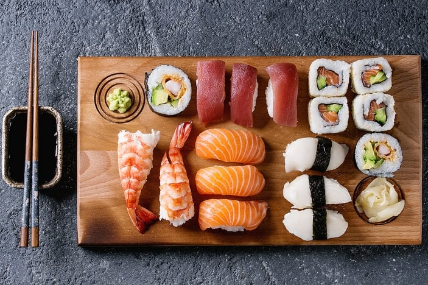
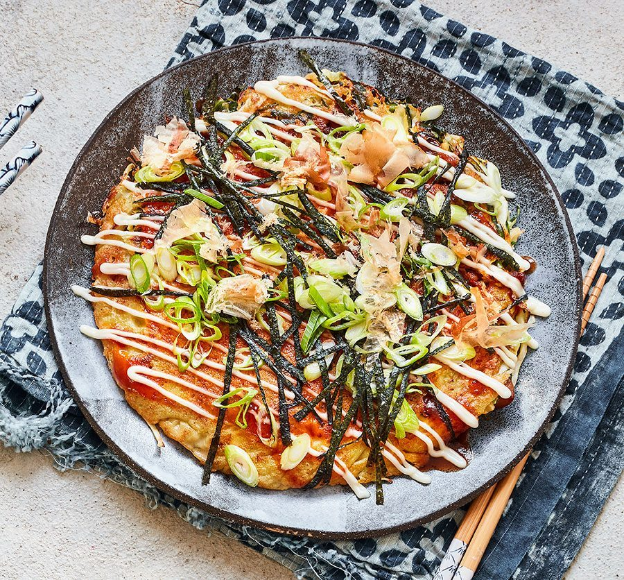
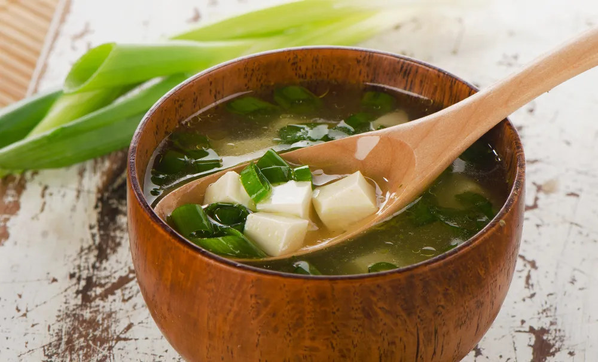
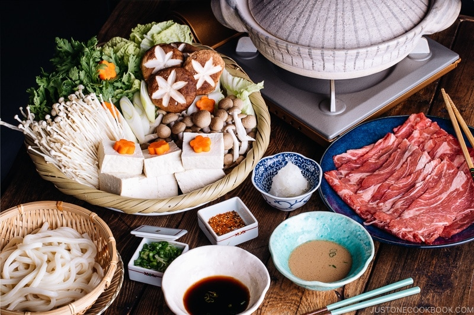

SUSHI

Ingredients
- 1 package spring roll rice wrappers , found in the Asian foods section at the grocery store
- 1 package vermicelli rice noodles , found in the Asian foods section at the grocery store
- 2 mangos , peeled and sliced into thin strips
- 1 large carrot , peeled and shredded or sliced into thin strips
- 1 large English cucumber , peeled and thinly sliced
- 1 pound small, cooked shrimp , deveined, tails removed, or substitute chicken
- 1 bunch fresh mint leaves
- 1 bunch fresh basil leaves
- 1 bunch fresh cilantro 3/4 cup sweet chili sauce
- 1/3 cup peanut butter , smooth or crunchy
- 1/2 teaspoon low-sodium soy sauce
- 1/2 teaspoon hoisin sauce
How to cook
- Cook vermicelli noodles in boiling water, for just a few minutes, according to package instructions. Drain and rinse with cold water.
- Gather all topping ingredients together, including chopped veggies, herbs, cooked shrimp.
- Add about 1 inch of water to a large, deep dish, or pie pan. Place one rice wrapper into the water and let soak for just 10-15 seconds. It should still feel pretty firm as you remove it and lay it on your counter or plate.
- (It will soften up as you add the filling ingredients, but If you let it soak for too long it will get too soft and will tear when you roll it up.)
- Layer 1-2 slices of each veggie, a few shrimp, a few leaves of each herb and a pinch of noodles on the ⅓ of the spring roll that is closest to you.
- Fold the sides of the spring roll in over the ingredients. Then pull the side closest to you up and over the ingredients, sealing everything together tightly, and rolling it up like a burrito.
- For the sauce, add all ingredients to a food processor or blender and pulse until smooth
OKONOMIYAKI

Ingredients
For the Okonomiyaki Batter
- 1 cup all-purpose flour (plain flour) (If you use a measuring cup, follow this method: Fluff your flour with a spoon, sprinkle it into your measuring cup, and use a knife to level it off)
- ¼ tsp kosher salt (Diamond Crystal; use half for table salt)
- ¼ tsp sugar
- ¼ tsp baking powder
- 5.6 oz nagaimo/yamaimo (mountain yam) (2-3 inches, 5-8 cm)
- ¾ cup dashi (Japanese soup stock; click to learn more) (You can make the standard kombu + katsuobushi Awase Dashi or use ¾ cup water + 1 tsp dashi powder; for vegan/vegetarian, make Vegan Dashi
- 4 large eggs (50 g each w/o shell)
- ½ cup tenkasu/agedama (tempura scraps)(24 g)
For the Other Ingredients
- 1 head green cabbage (large; 1.6 lb, 740 g)
- ½ lb sliced pork belly (You can thinly slice the pork belly if your pork belly is a slab. You can substitute with shrimp or squid. For a vegetarian version, skip the pork and use various mushrooms.)
- neutral-flavored oil (vegetable, rice bran, canola, etc.) (for cooking the okonomiyaki)
For the Quick Okonomiyaki Sauce
- 1½ Tbsp sugar
- 2 Tbsp oyster sauce
- 4 Tbsp ketchup
- 3½ Tbsp Worcestershire sauce
For the Toppings
- Okonomiyaki Sauce (homemade or store bought)
- Japanese mayonnaise
- katsuobushi (dried bonito flakes)
- aonori (dried green laver seaweed)
- green onions/scallions
How to Cook
- In a large bowl, combine all-purpose flour, salt, sugar, and baking powder and mix all together.
- Peel and grate the nagaimo in a small bowl (I use this graterthat I love). Note: I don't have any issues, but the nagaimo may irritate your skin and cause itchiness. Work quickly and rinse your hands immediately after touching the nagaimo. Nagaimo is very slimy and slippery, so make sure you have a good grip on the nagaimo if you wear kitchen gloves.
- Add the grated the nagaimo and dashi to the bowl.
- Mix it all together until combined. Cover the bowl with plastic wrap and let it rest in the refrigerator for at least one hour. Tip: Resting the batter relaxes the gluten in the batter, improves the flavor, and makes the okonomiyaki fluffier. Some okonomiyaki shops refrigerate the batter overnight. Meanwhile, you can prepare the okonomiyaki sauce and other ingredients.
- Meanwhile, gather all the ingredients for the okonomiyaki sauce.
- Combine sugar, oyster sauce, ketchup, and Worcestershire sauce in a small bowl. Mix all together until the sugar is completely dissolved.
- Discard the core of the cabbage and then mince the cabbage leaves.
- Cut the pork belly slices in half and set aside.
- After one hour, take out the batter from the refrigerator. Add eggs, tempura scraps (tenkasu/agedama), and pickled red ginger (kizami beni shoga) to the bowl. Mix until combined.
- Add the minced cabbage to the batter, one-third of it at a time. Mix well before adding the rest.
- In a large pan, heat the vegetable oil on medium heat. When the frying pan is hot (400ºF or 200ºC), spread the batter in a circle on the pan. We like thicker okonomiyaki (the final thickness is ¾ inches or 2 cm). If you’re new to making okonomiyaki, make it smaller and thinner so it’s easier to flip.
- Place 2-3 slices of pork belly on top of the okonomiyaki and cook covered for 5 minutes.
- When the bottom side is nicely browned, flip it over.
- Gently press the okonomiyaki to fix its shape and keep it together. Cover and cook for another 5 minutes.
- Flip it over one last time and cook uncovered for 2 minutes. If you’re going to cook the next batch, transfer the cooked okonomiyaki to a plate.
- Spread the okonomi sauce on top with a brush or spoon, drizzle with Japanese mayonnaise in a zigzag pattern (optional), and sprinkle with dried bonito flakes (katsuobushi). You can also top with dried green seaweed (aonori), chopped green onions, and pickled red ginger for garnish.
MISO Soup

Ingredients
- 4 cups water
- 1 piece kombu (dried kelp)(⅓ oz, 10 g; 4 inches x 4 inches or 10 cm x 10 cm)
- 1 cup katsuobushi (dried bonito flakes)
- 7 oz soft/silken tofu (kinugoshi dofu)
- 4-5 Tbsp miso (1 Tbsp (18 g) for every 1 cup (240 ml) of dashi)
- 1 Tbsp dried wakame seaweeed
- 1 green onion/scallion
How to cook
- Gather all the ingredients.
- Cut the green onion into thin rounds.
- To Make the Dashi (Can Be Made in Advance)
- Add the water and kombu to a medium saucepan. If you have time, soak the kombu in water for 30 minutes. NEVER wash kombu and do not remove the white substance.
- SLOWLY bring it to a boil on medium-low heat so you can extract as much umami from the kombu as possible (about 10 minutes). Right before the stock boils, remove the kombu and set it aside for another use. (If you leave the kombu, it gets slimy and yields a bitter taste.) Now, what you have is Kombu Dashi. If you’re vegetarian/vegan, use this kombu dashi for your miso soup.
- If you're not vegetarian/vegan, add the katsuobushi to the kombu dashi and bring it back to a boil again. Once the dashi is boiling, reduce the heat, simmer for just 30 seconds.
- Turn off the heat and let the katsuobushi sink to the bottom, about 10 minutes. Then, strain through a fine-mesh sieve.
- Now you have roughly 4 cups of Awase Dashi. You can store the dashi in the refrigerator for up to 3-5 days and in the freezer for up to 2 weeks. Reserve the spent katsuobushi and repurpose it; see the suggested recipes that follow at the end of the instructions.
- Add the dashi to the saucepan. If you are using premade dashi, bring it to simmer over medium heat and turn off the heat.
- Add the miso (typically, use 1 Tbsp miso for every 1 cup (240 ml) of dashi). Put the miso in a ladle, slowly add the dashi into the ladle, and stir with chopsticks to dissolve the miso completely. Here, I'm using a miso muddler. If you accidentally add too much miso, dilute the miso soup with dashi (or water).
- Here, I'm using a fine-mesh miso strainer, which helps you dissolve the miso faster. After dissolving the miso in the strainer, you may see rice koji (especially when it's koji miso). It's up to you if you want to include it in the miso soup or discard it (personal preference).
- Cut the tofu into ½-inch (1.3 cm) cubes and add to the miso soup. Tip: Add the tofu after the miso is completely dissolved; otherwise, you might break the tofu when stirring in the miso. Note: It is very common to cut tofu on your palm in Japan. However, it's not required and I recommend using a cutting board if you have never done this.
- Add the dried wakame seaweed. Reheat the miso soup until it is just hot. NEVER BOIL miso soup because it loses nutrients, flavor, and aroma. Add the chopped green onions right before serving to keep their fresh fragrance and color. Tip: If you worry about salt intake, I recommend rehydrating the dried wakame in a separate bowl of water to get rid of the saltiness, instead of rehydrating it in the soup itself.
- Now you can serve the miso soup.
Shabu Shabu

Ingredients
- 8 cups water sub with homemade dashi stock
- 2 tsp dashi powder
- 200 g pork thinly sliced for hot pot
- 250 g udon noodles frozen
- 300 g firm tofu chopped
- 100 g enoki mushrooms broken into small bunches
- 6 shiitake mushrooms stalks removed
- ¼ cabbage chopped
- 1 carrot diagonally sliced
- 3 spring onion / green onion sliced into lengths of 6cm / 1.5in
- 4 tbsp ponzu
- 4 tbsp goma dare (Sesame Sauce)
- ¼ cup chopped fresh cilantro
How to Cook
- Fill a medium saucepan, nabe pot or electric frypan with the water and dashi powder and to the boil on high heat.
- 8 cups water,2 tsp dashi powder
- While the water is coming to a boil, prepare the vegetables for cooking. First, chop up the cabbage into around 3cm x 3cm (1.5 inch) squares, then the tofu into 2cm x 2cm (1 inch) squares. Slice the carrot diagonally and the spring onion into 6cm (2.5 inch) lengths. For the enoki mushrooms, remove the roots and separate into small bunches for eating. Remove the stalks from the shiitake mushrooms. Place everything on one plate and move next to the shabu shabu pot ready for cooking.
- 300 g firm tofu,100 g enoki mushrooms,¼ cabbage,1 carrot,3 spring onion / green onion,6 shiitake mushrooms
- Next, place your pork on another plate and pop that next to the vegetables. Finally with the udon, if you purchased frozen, you can place in a bowl and pour boiling water over them to loosen and thaw out. Then drain and pop in a bowl, placing it alongside the meat and vegetables.
- 200 g pork,250 g udon noodles
- Next, we get the dipping sauces ready! You’ll need two small sauce bowls for each person at the table. Fill one with ponzu (2 tbsp) and the other with sesame sauce (2 tbsp). Place them in front of each person with a set of chopsticks (or a fork if you prefer!).
- 4 tbsp ponzu,4 tbsp goma dare
- If you’re having rice with your shabu shabu, prepare a small bowl for each person and set this in front of the dipping sauces.
- Now you’re ready to get your shabu shabu party started!
- Once your dashi broth is boiling, reduce to a simmer and begin the shabu shabu!
- Place some carrot and cabbage in first, as these will take the longest to cook (around 3 minutes). Next pop in some udon, mushrooms or tofu (these only need a minute). You don’t have to pop the whole lot in, just enough for everyone to eat some before adding more. This avoids overcooking or overcrowding your shabu shabu.
- Now it’s time for the meat! As shabu shabu meat is so thin, it only needs around 30 seconds to cook. Place only a few slices in at a time so they don’t overcook. Watch as it turns from pink to a light brown – then it’s ready to eat!
- When taking ingredients out, use your chopsticks, or if easier, a slotted spoon. Now it's time to dip! Traditionally, meat is dipped in the sesame sauce and vegetables in the ponzu. However, nowadays anything goes! You do you and find out what sauces you prefer to pair with each ingredient.
- Once dipped you can either it straight away, or grab some rice with it. By the end, your rice bowl should be filled with all your flavours from the soup and ingredients, so enjoy it all together.
Tempura

Ingredients
SHRIMP AND VEGETABLES
- ½ lb shrimp peeled and deveined
- 2 c vegetables sliced evenly and prepared
TEMPURA BATTER
- ¾ c all-purpose flour
- ½ c potato starch
- 1 large egg
- ¼ c vodka chilled in the freezer
TETSUYA DIPPING SAUCE
- 1 c water
- 2 g dashi mix
- ¼ c soy sauce
- ¼ c mirin
How to cook
- Shrimp: Clean the shrimp under running water and remove the heads. To devein the shrimp, pull the vein from the opening of the shrimp where you removed the head. To straighten your shrimp, score very shallow (⅛ inch) cuts on the belly of the shrimp. (You can also use skewers to straighten the shrimp if you don’t want to score them). Straighten the shrimp on a plate over paper towels to dry the shrimp off. Prep vegetables by washing and drying them before dunking them in the batter.
- Kabocha: slice the squash in half and remove the seeds. Slice the kabocha into ⅛ inch pieces.
- Root vegetables: cut into ⅛ even slices to make sure they cook properly.
- Eggplants: keep the top intact and make slices starting from the middle to the bottom of the vegetable. The eggplant should look like a fan.
- Zucchini: cut the tops off and cut into lengthwise strips with a ¼ inch width.
- In a heavy-bottomed pot, add about 2 inches of oil from the bottom of the pot. Heat the oil to 350 °F degrees.
- In a mixing bowl, add the flour and half of potato starch and mix thoroughly. Set aside the other half of potato starch to coat your ingredients right before dipping into the batter.
- In another bowl, add the egg and mix in the cold vodka. Then add the carbonated water.
- Carefully, add the wet batter into the mixing bowl and use the chopsticks to mix the batter in swift movements. Try to lift the bowl and move the bowl in round movements while stirring with the chopsticks. Make sure to not overmix the batter or your tempura will end up chewy. You should have some lumps in your batter. The mixing process should take no longer than one minute.
- In a separate bowl, add ¼ cup of potato starch in a shallow bowl. Cover the shrimp & vegetables in a light layer of potato starch.
- Frying shrimp: Holding the shrimp tail, dunk the shrimp into the batter and cover thoroughly. Carefully lower the battered shrimp into the oil. To add extra crispy tendrils of tempura, dip your hand back into the batter and drip small drops of batter onto the frying shrimp.
- Turn the shrimp after about one to two minutes. Remove the cooked shrimp from the oil and place them over paper towels on a cooling rack.
- Frying vegetables: Carefully lower the battered vegetables into the oil. The vegetables cook fairly quickly so make sure to watch these carefully. Root vegetables take about three minutes and other vegetables take about one to two minutes depending on their thickness. Turn the vegetables every so often so they cook properly. Remove the cooked vegetables (it should have a pale blonde color) from the oil and place them over paper towels on a cooling rack.
- In a small saucepot, add the water over medium-low heat.
- Add the dashi mix, soy sauce, and mirin.
- Heat until it boils for one minute and then remove from heat.
- Serve in a small sauce dish.
Japanese Traditional Desserts
PURIN

Ingredients
- Butter, for the molds
- 3 tablespoons warm water, divided
- 6 tablespoons sugar
- 2 cups milk
- 2/3 cup sugar
- 1 teaspoons pure vanilla extract
- 4 large eggs
How to make
- Gather the ingredients.
- Butter individual pudding molds.
- Heat 2 tablespoons of water in a saucepan then add 6 tablespoons of sugar, and simmer until the sauce is browned. Carefully add 1 tablespoon of warm water to thin the sauce.
- Pour sauce into the molds.
- Put milk in a medium pan, and heat to about 140 F.
- Dissolve 2/3 cup sugar in the milk, and add vanilla extract.
- Remove from heat.
- Lightly beat eggs in a bowl.
Gradually add warm milk to the egg mixture.
- Run the egg mixture through a strainer.
- Scoop out some bubbles from the surface of the strained egg mixture.
- Pour the remaining egg mixture over the sauce in the molds.
- Place the pudding molds in a steamer, and steam on low heat for about 15 to 20 minutes or until cooked through.
- Turn off the heat and let them cool.
- Remove pudding from the molds and serve on plates.
GREEN TEA COOKIES

Ingredients
- US CustomaryMetric
- 2 cups all-purpose flour (plain flour) (I strongly encourage you to use a kitchen scale; if you use a measuring cup, follow this method: Fluff your flour with a spoon, sprinkle it into your measuring cup, and use a knife to level it off; otherwise, 2 cups of flour will weigh more than 240 g)
- 2½ Tbsp matcha green tea powder (1 Tbsp matcha is 6 g)
- ¾ cup unsalted butter (softened; at room temperature; leave the butter out on the counter for 1 hour or microwave it in 5-second increments until it's softened)
- 1 cup confectioners’ sugar/powdered sugar (1 cup + 2 tsp to be precise)
- pinch kosher salt (Diamond Crystal; use half for table salt)
- 2 large egg yolks (at room temperature)
- ¼ cup white chocolate chips
How to make
- Combine the all-purpose flour and the matcha green tea powder in a large bowl.
- Sift the flour and the matcha powder.
- In a stand mixer with a paddle attachment or in a large bowl with a hand mixer, beat the unsalted butter until smooth and creamy. It’s important to soften the butter ahead of time.
- Add a pinch of salt and blend.
- Add the powdered sugar and beat well until soft and light. As you blend, stop the mixer and scrape down the bowl occasionally.
- Add the egg yolks and mix well until combined.
- Gradually add the flour and matcha mixture and mix until just combined.
- Add the white chocolate chips and mix until just incorporated.
- Cut the dough in half (if you're making 24 cookies.) Shape into cylinders about 1½ inches (4 cm) in diameter and 7 inches (18 cm) long.
- Wrap the logs in plastic wrap and chill in the refrigerator until firm, at least 2 hours. Tip: You can place the logs on a bed of uncooked rice while chilling. It’ll keep the dough in a nice cylindrical shape so your cookie slices won’t be flat on one side. To Store: You can also freeze the unbaked logs of dough, wrapped in plastic wrap, for up to 2 months. To bake, let sit at room temperature for about 10 minutes before cutting and baking. Do not let the dough fully defrost.
- Preheat the oven to 350ºF (175ºC). For a convection oven, reduce the cooking temperature by 25ºF (15ºC). Line a baking sheet with parchment paper or a silicone baking liner. Remove the dough from the refrigerator and unwrap the plastic wrap. Use a sharp knife to slice the dough into rounds about ⅓ inch (7 mm) thick. If the dough is too hard to slice, wait 5 minutes or so before slicing. Place the sliced dough on the baking sheet, leaving about 1 inch (2.5 cm) of space between the rounds.
- Bake the cookies at 350ºF (175ºC) for about 15 minutes, or until the edges of the cookies start to get slightly golden brown.
- You can keep the cooled cookies in an airtight container and store them at room temperature for at least 4 days.
Japanese Red Bean Cake(Dorayaki)

Ingredients
- US Custom
- 4 large eggs (50 g each w/o shell)
- ⅔ cup sugar (⅔ cup + ½ Tbsp to be precise, for 6 Dorayaki)
- 2 Tbsp honey
- 1⅓ cup all-purpose flour (plain flour) ( if you're using a measuring cup, please follow this method to measure; otherwise, the amount of flour tends to be more than you need; 1 cup should weigh 120 g; use gluten-free flour for GF)
- 1 tsp baking powder
- 1-2 Tbsp water (adjust to achieve the desired batter consistency)
- neutral-flavored oil (vegetable, rice bran, canola, etc.) (as needed for greasing the pan during cooking)
- lb sweet red bean paste (anko)
How to make
- Gather all the ingredients.
- In a large bowl, combine the eggs, sugar, and honey. Whisk well until the mixture becomes fluffy.
- Sift the flour and baking powder into the bowl with the egg mixture and mix until combined. Put the bowl in the refrigerator to rest the batter for 15 minutes.
- After resting, the batter should be relaxed and slightly smoother. Now, stir in half of the water and check the consistency. Add more of the measured water until you reach a pancake batter consistency. The consistency should be similar to pancake batter. Depending on the size of the eggs and how accurate your flour measurement is, the water amount may vary.
- Heat a large nonstick frying pan over low. It's best to take I keep the heat on the lowest setting for 5 minutes. When the pan is thoroughly heated (no hot spots), increase the heat to medium low. Dip a paper towel in the vegetable oil and coat the bottom of the pan with the oil. Then, use another paper towel to remove the oil completely (that's the key to evenly golden brown Dorayaki pancakes). With a ladle or a small measuring cup , pour 3 Tbsp of the batter from 3 inches (8 cm) above the pan to create a pancake that's 3 inches (8 cm) in diameter. Cook one pancake at a time.
- When you see the surface of the batter starting to bubble, flip the pancake over and cook the other side. When done, transfer it to a plate and cover it with a damp towel to prevent it from drying out. Grease the pan between batches, as needed. Continue making the rest of the pancakes (you can make about 12 pancakes).
- Assemble the Dorayaki by making a sandwich using two pancakes and the sweet red bean paste as filling. Put more red bean paste in the center so the shape of the Dorayaki will be curved (the middle part should be thicker than the edges). Wrap the Dorayaki with plastic wrap until ready to serve.
- The leftovers can be wrapped in plastic and stored in a cool place for 2 days. They also can be put in a freezer bag and stored in the freezer for a month.